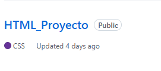
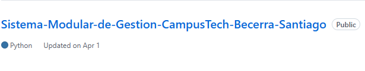
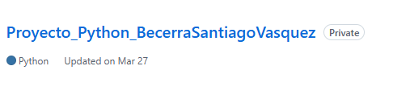
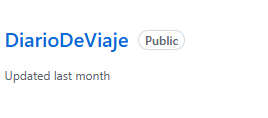

Santiago Becerra Vasquez
Desarrolador de software junior
Desarrolador de software junior
Habilidades Blandas
Soy una persona responsable, creativa y con facilidad para aprender nuevas habilidades. Me adapto rápido al trabajo en equipo, me gusta resolver problemas y siempre busco mejorar tanto personal como profesionalmente en cada proyecto que realizo.
Estudios
Actualmente estoy aprendiendo desarrollo web básico con HTML y CSS, además de conceptos básicos de GitHub y Scrum. Tengo conocimientos de nivel junior enfocados en la creación de páginas web sencillas, diseño básico y lógica de programación.
Lenguajes de programacion
Cuento con formación en Técnico en BPO, Técnico en Inglés y conocimientos básicos de francés. También he participado en actividades académicas relacionadas con tecnología, comunicación y herramientas digitales.
Ventajas Personales
Me apasiona la tecnología, el diseño web y el aprendizaje constante. Disfruto crear proyectos digitales, aprender nuevas herramientas y desarrollar habilidades que me ayuden a crecer en el área de programación y desarrollo web.
Pasa tu mouse por encima de las tarjetas y mira la transformacion!!
MIS PROYECTOS
Proyecto 1
El mas reciente proytecto de html y css

Proyecto 2
El mas reciente proytecto de html y css

Proyecto 3
El mas reciente proytecto de html y css

Proyecto 4
El mas reciente proytecto de html y css
